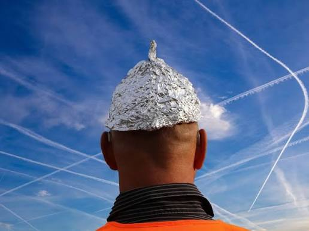
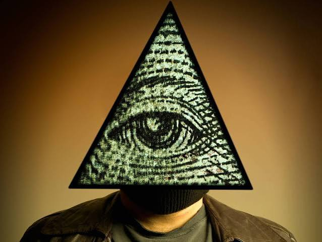

Secretos, misterios y explicaciones alternativas de la historia
Las teorias conspirativas son explicaciones que sugieren que ciertos eventos, decisiones o sucesos importantes son controlados por grupos ocultos con objetivos secretos. A lo largo de la historia han surgido cientos de teorias que intentan explicar fenomenos politicos, cientificos y sociales.
Algunas teorias nacen por falta de informacion, otras por desconfianza hacia instituciones o por eventos que parecen dificiles de explicar. Aunque muchas carecen de evidencia comprobable, continan siendo temas de gran interes para millones de personas alrededor del mundo.
Las teorias conspirativas suelen aparecer cuando un acontecimiento importante genera dudas o cuando la informacion disponible resulta insuficiente para explicar completamente lo ocurrido. En muchos casos surgen debido a la desconfianza hacia gobiernos, empresas o instituciones.
Tambien pueden desarrollarse por la necesidad humana de encontrar respuestas a situaciones complejas o inesperadas. Algunas se basan en hechos reales, mientras que otras nacen de rumores, especulaciones o interpretaciones personales.
Muchas teorias conspirativas han inspirado peliculas, libros, series de television, documentales y videojuegos. Algunas se han convertido en parte de la cultura popular y siguen siendo discutidas decadas despues de haber surgido.
El objetivo de esta pagina es presentar algunas de las teorias conspirativas mas conocidas de manera informativa, explicando sus principales afirmaciones, origen y la informacion historica disponible sobre cada una de ellas.
Las teorias conspirativas forman parte de la historia moderna y reflejan la curiosidad humana por comprender acontecimientos complejos. Aunque muchas no cuentan con evidencia verificable, continúan despertando interes y debate en todo el mundo.

